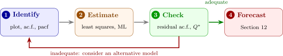

13.1 The Box–Jenkins approach
The methods of the last three sections fit together into a procedure, due to Box and Jenkins, for building an ARIMA model. Its main stages are:
- 1.
- Identification: examining the data, its plot and its sample ac.f. and partial ac.f., to identify a model (after transforming or differencing if necessary);
- 2.
- Estimation: estimating the parameters of the model;
- 3.
- Diagnostic checking: examining the residuals from the fitted model to see whether the model is adequate;
- 4.
- Consideration of an alternative model: done when the first model appears to be inadequate, after which the cycle is repeated.
Only when a model passes the checks is it used for forecasting (Figure 11). The emphasis on checking is the heart of the approach: identification from correlograms is a judgement, and the residuals are where a wrong judgement shows itself.

Questions on this section
Stuck on something here? Ask below and it stays attached to this topic.